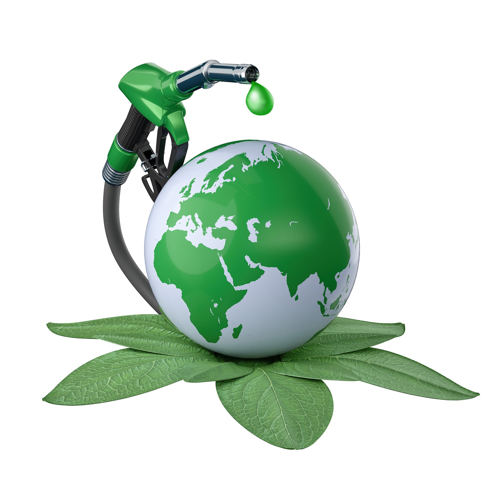

Clean energy—renewable power that comes from the sun, water, wind, underground (geothermal), and biomass—comes from, and benefits, our environment. At the same time, the technologies we develop to transmit, deliver, and use clean energy can change our environment. Responsible clean energy development, including nuclear power, is top of mind for the U.S. Department of Energy (DOE) to safely and securely reduce carbon emissions and address the threat of climate change
DOE is working to maximize the benefits of clean energy for all, while minimizing and eliminating any negative environmental impacts resulting from clean energy deployment.
Clean Energy Benefits the Environment
Clean energy is good for the environment because it does not produce the harmful emissions that lead to climate change. Climate change—including extreme weather and sea-level rise—causes drought, wildfires, flooding, poverty and displacement, food insecurity, health risks, and species loss.
Clean energy technologies improve human health by reducing air pollution and water and soil contamination. A clean energy economy will lower rates of asthma, heart conditions, and other health issues related to climate change across the nation. It will also support our ecosystems—geographic areas made up of plants, animals, and other organisms that interact with each other and the physical environment—and help sustain life on Earth.
Energy-efficient processes, practices, materials, and products also benefit the environment, because energy efficiency is vital to decarbonizing the economy. Conserving energy, water, and materials strengthens our resources and reduces emissions.
While harnessing power from renewable energy resources eliminates carbon dioxide emissions, using biomass resources tackles additional environmental issues. Biomass is derived from plant- and algae-based materials, including food waste and forestry residue. Converting biomass into sustainable fuels for modes of transportation delivers the following environmental benefits:
Controls erosion
Improves water quality and quantity
Increases biodiversity
Stores carbon in soil.
Prioritizing Environmental Safety
When a construction crew breaks ground to build infrastructure, such as a wind turbine, solar farm, or manufacturing facility, they alter the environment: Soil shifts, bugs scatter, dust kicks up. The goal is to prevent harm in the process, as well as after clean energy deployment.
DOE takes steps to ensure that clean energy projects address potential environmental concerns before projects begin. This means considering the land at the project site, the safety of materials used, whether the materials are obtained sustainably, the safety of fish and wildlife, and more.
For example, using previously disturbed ground, like mine lands, as sites for clean energy projects will reduce the impact of these technologies on undeveloped lands and enable more land conservation, along with job creation and economic benefits for communities. And DOE’s Office of Energy Efficiency and Renewable Energy (EERE) funds research on recycling techniques for clean energy technologies, including batteries, wind turbine blades, and solar panels, that have reached the end of their useful life.
We need to transition from dirty to clean energy. Here's why.
Top questions (and answers) about renewable energy
What’s not to love about renewable energy? Wind turbines, solar panels and geothermal plants harness natural elements and transform them into clean energy. They emit virtually no air pollution or climate change emissions. And their supply is unlimited – all it takes to generate power is for the sun to shine and the wind to blow.
But nobody’s perfect. Large renewable energy projects require a significant amount of space. And sometimes projects are proposed in wildlands that have other important uses – wildlife habitat, pristine landscapes and areas of cultural importance.
It may seem like an impossible conundrum. We need renewable energy for a cleaner, more sustainable future. But we also need to protect rich wildlands and wildlife for future generations. The good news is that we can do both with careful planning, smart policies and mitigation that offsets environmental impacts.
1. Is renewable energy bad for the environment?
The short answer is that renewable energy is good for the environment. But we need to be careful about where and how we build it.
When compared to fossil fuels, renewables are much greener. Oil, gas and coal use can lead to air and water pollution, land degradation and dirty emissions that drive climate change. Renewables, on the other hand, release very small amounts of pollution and emissions, mostly tied to their manufacturing, construction and maintenance.
The contrast is striking. Burning coal releases into the air up to 3.6 pounds of greenhouse gases that lead to climate change for every kilowatt-hour of energy (CO2E/kWh). In the meantime, wind power emits only 1 percent of that amount.
However, renewables can have other environmental impacts when placed in inappropriate places. Massive wind turbines, vast solar energy farms and geothermal energy plants can disturb wildlands and wildlife. The key to minimizing those risks is carefully planning their location and mitigating environmental impacts.
There are plenty of success stories. In Florida, solar industry and environmental groups came together to create solar sanctuaries – solar farms that respect the environment. The projects are placed away from wetlands and important animal habitats like the gopher tortoise. They also include new vegetation around the solar panels that benefit pollinators and other wildlife.
2. Are wind turbines dangerous to birds?
Wind turbines and birds sharing the skies makes a lot of people nervous.
The American Wind Wildlife Institute (AWWI), an independent science-based nonprofit collaborative between the wind industry and conservation/science organizations, recently completed a thorough analysis to better understand the impacts of wind energy on birds. Researchers analyzed data collected from 4,340 wind turbines over a period of 15 years. The research confirmed what has already been well-documented: Wind turbines cause far fewer bird fatalities than other human-caused sources such as bird collisions with buildings and communications towers.
In any case, as we scale up wind energy, we must strive to make wind power as safe as possible for birds. And there are many ways to do that. The most important step is to plan new wind farms away from migration routes and important habitat areas. Technology can also help.
Investing in safe wind turbines is key to both conservation and clean energy efforts – especially when we consider that wind energy can help to tackle climate change, one of the biggest threats to birds and wildlife in general.
3. How much land would it take to power the country with solar energy?
Imagine the state of West Virginia, approximately 13 million acres of land, covered in solar panels. That’s how much land we would need to power the country with solar energy. Even with widespread rooftop solar, we would still need large-scale solar farms to reach that goal.
The good news is that the United States is a big country and there’s plenty of space for solar farms. But we have to be careful where they are placed in order to preserve wildlands and wildlife. The best places are the ones already developed and near transmission lines and roads.
A great example is the Dry Lake solar zone. The solar farm near Las Vegas, Nevada, powers 46,000 homes but had a relatively low environmental impact. It was built in an area already affected by industrial facilities, old mining sites and multiple transmission lines. The existing infrastructure also helped to speed up the project.
4. Does geothermal energy use too much water?
The secret to geothermal energy lies deep within the Earth’s crust. Heat stemming from the planet’s formation is brought to the surface and used to generate electricity. Currently, only 0.4 percent of the country’s power comes from geothermal sources, but it’s seen by experts as having great potential.
One concern about geothermal plants is that they require a lot of water to function. Hot water, steam or geothermal fluids are extracted from underground, and their heat is used to spin turbines that generate electricity. For some projects, water is also used in the cooling down of these turbines.
The truth is that all geothermal plants in operation today re-inject at least some geothermal fluids back into the earth at the end of that process. Technology can also minimize water use. Through the method of “dry-cooling” turbines are cooled down with air instead of water. It is important that projects are designed to preserve our precious water resources as much as possible.
5. Is it a good idea to build renewables close to where people live?
Some people love the idea of renewables in their backyards. They don’t pollute the air, help the fight against climate change and symbolize a more sustainable future. Others are not as excited, possibly because of how they look and potential risks to human health.
But for every homeowner who complains that they don’t like seeing a big turbine on the horizon, there is someone who points out wind farms are much more aesthetically pleasing than pollution-belching coal-fired power plants. And though the purported health concerns surrounding renewable energy get a lot of coverage, some of the most-cited complaints are scientifically dubious or may be motivated by the power of suggestion.
This is especially true when projects are proposed near low-income communities or those predominantly made up of people of color—populations that are disproportionately impacted by development and environmental degradation.
6. What is the best possible place to build wind, solar and geothermal energy projects?
A lot of land across the country has already been disturbed by some kind of development – mining, landfills and other activities. We can’t go back in time to prevent the damage that has been done and these areas are often too devastated for a full recovery.
But they can have a second life as a renewable energy site. According to the Environmental Protection Agency (EPA), as much as 43 million acres of land in the U.S. fit into that category and would be the perfect place for renewables.
Nevada could take the lead on transforming old mining sites into renewable energy plants. The move is a win-win-win. Mining companies can find new use for old mines. Clean energy companies benefit from existing infrastructure for new projects. And conservationists protect habitats that might otherwise be considered for energy development.
Let’s get this right
There’s no way around it. We need to transition from dirty to clean energy to protect the environment, human health and curb the climate crisis. And we’ve been making strides in the right direction. In the past 10 years, the country has doubled its capacity to produce clean power and currently nearly 10 percent of all electricity generated comes from solar, wind and geothermal.
As we move forward, we need to make sure renewables are being built in the right places, limiting impacts to sensitive wildlands and wildlife.
That is true especially when it comes to our shared public lands. Some of our nation’s best solar, wind and geothermal resources are found on public lands. But they also hold some of our most precious landscapes – including habitat for iconic wildlife and untouched wildlands.
A bipartisan bill is one important way to help advance responsible renewable energy projects on our public lands. The Public Land Renewable Energy Act (PLREDA) was recently introduced in the House of Representatives by Congressmen Paul Gosar (R-AZ) and Mike Levin (D-CA) and in the Senate by Senators Martha McSally (R-AZ) and Martin Heinrich (D-NM). The bill plans to identify the best places for wind, solar and geothermal plants and direct revenues from development to counties, states and a conservation fund.
A bipartisan bill is one important way to help advance responsible renewable energy projects on our public lands. The Public Land Renewable Energy Act (PLREDA) was recently introduced in the House of Representatives by Congressmen Paul Gosar (R-AZ) and Mike Levin (D-CA) and in the Senate by Senators Martha McSally (R-AZ) and Martin Heinrich (D-NM). The bill plans to identify the best places for wind, solar and geothermal plants and direct revenues from development to counties, states and a conservation fund.
Renewable Energy By Country
china 1,398,207
United States 572,409
Brazil 426,638
Canada 418,679
India 195,242
Germany 193,735
Russia 170,077
Japan 169,660
Norway 140,240
Italy 109,962
Total Renewable Energy (GWh)
Here are solutions for green energy
1. usage of ELECTRIC VECHILES
Electric vehicles (EVs) are automobiles that are powered by electric motors and use rechargeable batteries as their primary source of energy. Compared to traditional gasoline-powered cars, EVs have several advantages, including:
Lower operating costs: EVs are generally cheaper to operate than gas cars because electricity is typically less expensive than gasoline on a per-mile basis.
Reduced greenhouse gas emissions: EVs produce fewer greenhouse gas emissions than gas cars because they don't burn fossil fuels. However, the environmental benefits of EVs depend on how the electricity used to charge them is generated.
Quieter operation: EVs produce less noise than gas cars, making them a popular choice for urban environments.
Reduced dependence on foreign oil: Because EVs don't require gasoline, they can help reduce a country's dependence on foreign oil.
2. usage of BIO FUEL
Biofuel is a type of renewable energy made from organic matter like plants, crops, and agricultural waste. Biofuels can be used in a variety of ways, including:

Transportation: Biofuels can be used as a substitute for gasoline or diesel in vehicles, either in pure form or blended with conventional fuels.
Electricity generation: Biofuels can be burned to generate electricity, either in standalone power plants or in co-firing with coal in existing power plants.
Heating: Biofuels can be used as a source of heat in homes and businesses, either in the form of wood pellets or in boilers designed to burn biofuels.
3.usage of GREEN ENERGY
Green energy is a type of energy that is generated from renewable sources such as wind, solar, hydro, geothermal, and biomass. Green energy can be used in a variety of ways, including:
Electricity generation: Green energy can be used to generate electricity through solar panels, wind turbines, hydropower plants, geothermal power plants, and biomass power plants.
Transportation: Green energy can be used to power electric vehicles or to produce hydrogen for fuel cell vehicles.
Heating and cooling: Green energy can be used for heating and cooling buildings through the use of geothermal heat pumps or solar thermal systems.
Industrial processes: Green energy can be used in a variety of industrial processes, including the production of chemicals and plastics.
Other uses:> Green energy can be used to power a variety of other applications, including water pumps, refrigeration, and lighting.